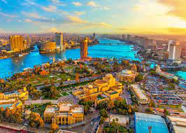
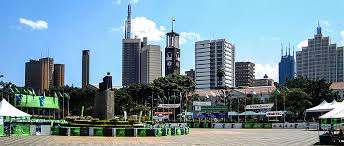

Cape Town is a port city on South Africa’s southwest coast,
on a peninsula beneath the imposing Table Mountain. Slowly
rotating cable cars climb to the mountain’s flat top, from
which there are sweeping...

Cairo
Cairo, Egypt’s sprawling capital, is set on the Nile River.
At its heart is Tahrir Square and the vast Egyptian Museum,
a trove of antiquities including royal mummies and gilded
King Tutankhamun artifacts.

Nairobi
Nairobi is Kenya’s capital city. In addition to its urban
core, the city has Nairobi National Park, a large game
reserve known for breeding endangered black rhinos and
home to giraffes, zebras and lions.